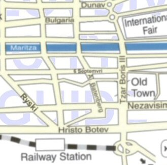

Friday, August the 6th, 2004
back to: title, date or indexes
I am suffering from a spiritual malaise. I am soul sick. I have not eaten any breakfast. I need to darn a hole in the sleeve of my jumper, but I have no further wool that matches. I feel inconsequential and abandoned and remote. My cheeks blush furiously with an embarrassment born of pity. Every last pencil I have is blunt. I am being driven crackers by my landlord's drooling hound. My senses are atrophied, like a muscle unexercised. Pots and pans are strewn haphazardly in my kitchen. My legs have given way. I have an evil taste in my mouth. Hope is something for other people, not for me. My teapot is cracked and the cosy is stained and threadbare. Nervous spasms contort my features. I keep to the shadows if I have to move in the street. Do you hear that sound? It is my groan of despair. I have extinguished all the lanterns and I know in my cold, base heart that they will never be lit again. The air is heavy with menace and all I can hear is the screaming of desolation and ruin. Insects swarm about my face but I cannot summon the energy to swat them away. I have sprained my ankle. Dust lies everywhere, ashes and dust. Desire, ah, desire for me is not even a memory. Feral cats hiss at me and extend their claws. Even my poultry is contaminated. All sense of urgency is lost and yet I cannot relax. My head is swimming. My shoes let in rainwater and my socks are soaking wet. The washbasin is cracked. The taps no longer work. Even the most innocent and cherubic children spit at me. I gag on my own wretchedness. And then with a mighty effort, I pull myself up, and I trudge across Bulgaria like a whipped cur, and I go the Central Post Office building in Plovdiv, and I look at Georgi Bozhilov's mural. Yes, that Georgi Bozhilov, whose nickname was Slona, or Elephant, a member of the so-called Plovdiv Fivesome. I gaze at the post office mural and somehow I am pulled back from the brink, and I embrace life again, wholeheartedly, blissfully. Here… here is a map of the centre of Plovdiv, to help you find your way, as I found mine!
